本课导读模块二
上一课你学会了给 WorkBuddy 下任务。但同一件事说第二遍、第三遍，就是在浪费时间。 这一课学技能（Skill）——把一套做法写成文件，以后一句话就能调用。
学习目标
学完这一课，你应该能——
- 说出 Skill 是什么，以及它和一个「说明文件」的关系；
- 说出在 WorkBuddy 里找到并安装 Skill 的四种方式；
- 独立完成一次「找到 → 安装 → 调用」的完整操作；
- 说出为什么技能的「描述」写得越具体越好用；
- 说清「关闭」和「卸载」有什么不一样。
知识点导航
一、Skill 是什么概念
WorkBuddy 负责理解任务、组织执行；Skill 则是一组可复用的说明、脚本、参考资料， 告诉它某一类任务该怎么做、调用什么工具、交付什么格式。
一个最简单的 Skill，就是下面这样一个文件夹：
my-skill/
├── SKILL.md ← 必需：写明用途、输入、输出、步骤
├── scripts/ ← 可选：可执行的脚本
├── references/ ← 可选：模板、规范、示例
└── assets/ ← 可选：输出要用的素材
四个里面只有 SKILL.md 是必须的。它开头那一小段里，
description 最关键——决定了 AI 什么时候会想起用它：
---
name: tech-article-writing
description: 用于撰写 AI 产品、模型评测和科技行业相关文章。
当用户要写公众号文章、产品体验稿时使用。
---
（下面写明具体步骤：先确认角度 → 查一手资料 → 交叉验证 → 成稿 → 检查 AI 味）
到这里你可能会想：那它跟平时写提示词有什么区别？区别就在下面这张表里：
| Prompt（提示词） | Skill（技能） | |
|---|---|---|
| 管什么 | 当前这一件事 | 这一类事该怎么做 |
| 能用几次 | 说一次，用完就没了 | 装一次，反复用 |
| 放在哪里 | 对话框里 | 一个文件夹（含 SKILL.md） |
| 能带什么 | 只能带文字 | 能带脚本、模板、参考资料 |
| 谁来触发 | 每次都得你自己说 | 它按 description 自己判断，或你打 / 点名 |
你每次都在重复交代的那些要求（「别写太 AI」「按我们学校格式来」）， 就该从提示词里搬出来，做成技能——以后不用再重复说。
二、它是怎么工作的机制
你可能担心：装了几十个技能，AI 每次开工前要把它们的说明全部读一遍吗？那得多慢。
不会。它用的是渐进式披露——像查手册一样，用到哪一层才翻哪一层：
| 层级 | 什么时候加载 | 加载什么 |
|---|---|---|
| 第一层 | 启动时加载，所有技能都加载 | 只有 name 和 description 两行 |
| 第二层 | 判断「可能用得上」之后 | 完整的 SKILL.md 正文 |
| 第三层 | 执行到某一步、确实需要时 | references/ 里的文档、scripts/ 里的脚本 |
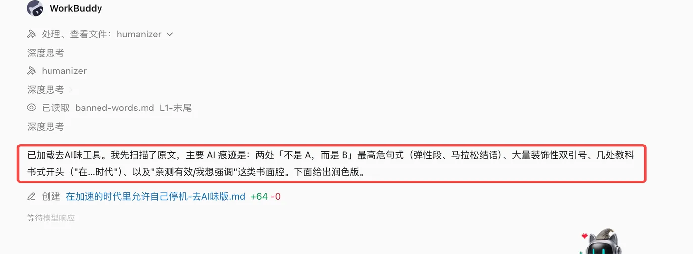
下面它汇报的抓取点也值得看：「不是 A，而是 B」句式、装饰性双引号、教科书式开头—— 都是能一条条核对的，不是「我感觉有点 AI 味」。
截图整理自 WorkBuddy 实战蓝皮书，仅作课堂讲解用；界面随版本更新，以你实际使用的版本为准。
Skill 由 Anthropic 于 2025 年 10 月 16 日推出，2025 年 12 月 18 日发布为开放标准； WorkBuddy 的技能沿用同一套文件夹规范。本站核对日期 2026-09。
三、在 WorkBuddy 里找到 Skill动手
左侧边栏点「技能」进入技能页，这里有四种方式拿到技能：
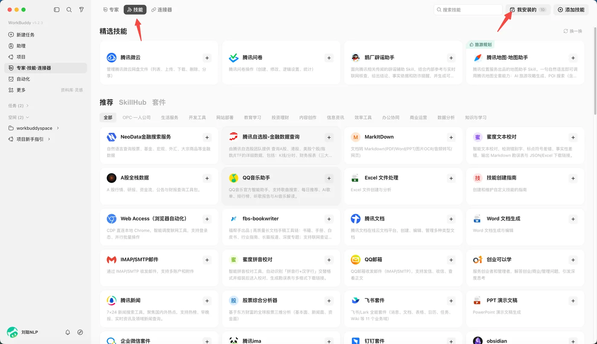
① 左侧边栏「专家·技能·连接器」——总入口；
② 顶部的「技能」标签——专家、技能、连接器三选一，点它；
③ 右上角「我安装的」——你已经装过的技能都在这儿，旁边就是「添加技能」。
截图整理自 WorkBuddy 实战蓝皮书，仅作课堂讲解用；界面随版本更新，以你实际使用的版本为准。
| 方式 | 你做什么 | 什么时候用 |
|---|---|---|
| 市场安装 | 浏览或搜索，点安装 | 需求常见，别人已经做好了 |
| 查找技能 | 用一句话描述需求，让它自己去找 | 知道自己要干嘛，但不知道有没有现成的 |
| 上传技能 | 拖入技能包（文件夹或 zip） | 别人分享给你的技能包 |
| 创建技能 | 用一句话描述，让它从零建一个 | 市面上没有，而这活你要反复做 |
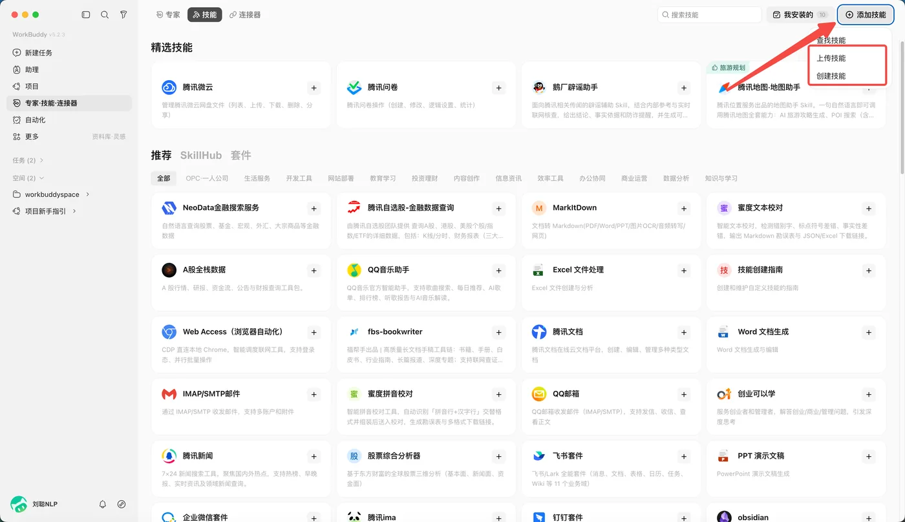
点开「添加技能」里的「上传技能」，会看到下面这个弹窗——注意它对文件的要求写得很明确：
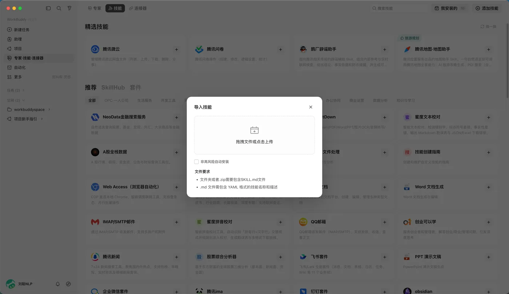
但它要求：压缩包（zip）里必须包含
SKILL.md；
如果只给一个 .md 文件，里面必须有 YAML 格式的名称和描述——
就是前面那个用 --- 包起来的头部。所以别人发给你一个技能包，先解开看一眼有没有
SKILL.md，
没有就装不上，别急着问「为什么装了没反应」。截图整理自 WorkBuddy 实战蓝皮书，仅作课堂讲解用；界面随版本更新，以你实际使用的版本为准。
除了平台自己的市场，社区里还有别的技能市场可以逛，例如下面这个：
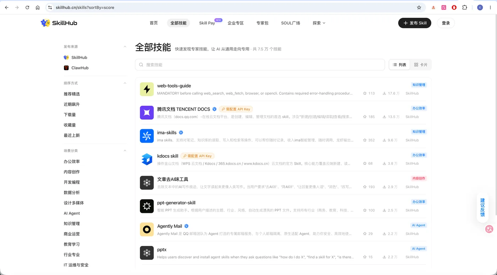
留意列表第 5 行：「文章去 AI 味工具」——就是本课动手做 ② 要用的那个技能。
⚠️ 这是第三方社区市场，不是 WorkBuddy 自带的。从这类站点拿技能， 装之前更要看清来源和权限，下面那条提醒请务必读一遍。
截图整理自 WorkBuddy 实战蓝皮书，仅作课堂讲解用；蓝皮书为社区非官方读物，产品口径以官方文档为准。
装之前问三句：谁发布的？它要什么权限？描述里说的跟它实际干的事对得上吗？ 拿不准的，先别装。
做完你手上会有：一份整理好的成果（纪要 / 群发言稿 / 复习表，三选一）。 只装不用 = 没做完。
第 1 步 · 挑一件活，复制对应素材（2 分钟）
- 从下面三件里勾一件□ A：把杂乱会议记录整理成带待办的纪要 □ B：把生硬通知改写成班级群发言稿 □ C：把流水账笔记排成按科目的复习表
- 复制你勾的那一份素材点代码块右上角「复制」，粘进记事本暂存。
| 素材 | 内容概括 | 点右边复制 |
|---|---|---|
| A | 一段没格式、有口语、缺信息的工作 meeting 记录 | 见下方代码块① |
| B | 一份全是空话、关键时间地点都写「另行通知」的通知 | 见下方代码块② |
| C | 四天混记、科目交叉的课程笔记 | 见下方代码块③ |
周三下午的会 地点在实训楼三楼好像
到的人：老王 小李 张老师请假
聊的事：
1、下周要交的那个实训报告 老师说格式不对 要重弄
李说他那里有一版新的模板 回头发群里
2、机房电脑有五台开不了机 报修了没人来
王说先让学生两人一台 凑合着上
3、下个月有个技能比赛 报名截止15号
张不在没法定 下次再议
4、卫生的事 值日表要重排
没人管 拖到下礼拜再说
关于组织开展2026年秋季学期学生体质健康测试工作的通知
各班级：
为深入贯彻落实相关精神，进一步切实提高学生体质健康水平，营造良好氛围，
经研究决定，开展本次体质健康测试工作，现将有关事项通知如下：
一、测试时间：另行通知
二、测试地点：另行通知
三、参加人员：全体学生
四、有关要求：请各班级高度重视，积极组织学生参加，确保测试工作顺利开展。
特此通知。
9月15号 周一
机器学习课 讲了线性回归
老师说重点是损失函数 用的那个最小二乘法
作业是第三章第2题 周五交
9月16号 周二
Python课 讲pandas怎么读excel
read_excel() 那个函数
练习没做完 明天继续
9月17号 周三
英语课 听力练习 unit3
9月18号 周四
机器学习课 接着讲逻辑回归
提到梯度下降 好像和下节课的内容连着
作业: 第三章第3题 下周一交
第 2 步 · 让 WorkBuddy 自己去找技能（3 分钟）
- 左侧边栏点「技能」进入技能页。
- 点右上角「添加技能」→ 选「查找技能」会弹出一个输入框。
- 把下面这句整句粘进去，回车⚠️ 用原句，不要自己改写—— 它匹配靠的是关键词，你换说法就可能搜不到。
把会议记录整理成带待办事项的纪要
把正式通知改写成口语化的群消息
把学习笔记整理成表格
第 3 步 · 挑一个装上（2 分钟）
- 在结果里先看三样，再决定装哪个
① 有没有官方 / 推荐标记？有的优先；
② 它申请什么权限？（只读文件？还是要联网、要登录账号？能不给的就不给）；
③ 它的描述跟你那件活对得上吗？（比如你要「整理成纪要」，它写「音视频转写」就不对路） - 点「安装」装完会进「已安装」列表。
第 4 步 · 用它把活干完（3 分钟）
- 新建一个对话⚠️ 必须新开——刚装好的技能在旧对话里常常不生效， 这是新手最常卡住的地方。
- 先贴素材，空一行，再贴下面这句指令，一起发送 没自动调用也没关系——在指令开头加上「用刚装的技能」点名它就行。
用刚装的技能，把上面这段会议记录整理成纪要，输出三块：① 会议基本信息（时间/地点/参会人）② 待办清单，每条写清「事项 / 负责人 / 截止时间」，没有的写「待定」③ 这次没定下来、下次要再议的事。素材里没有的信息不要自己编。
用刚装的技能，把上面这份通知改写成能直接发班级群的版本：口语化、去掉空话套话、把缺的时间地点用【待确认】标出来。不许编造具体时间地点。
用刚装的技能，把上面这段笔记整理成一张表格，按科目分组，列出「科目 / 日期 / 讲了什么 / 作业与截止时间」。笔记里没写的就空着，不要补。
做到这三条，就算做完了
- 手上多了一份成形的结果不是「我装好了」，而是真的有一份纪要 / 发言稿 / 表格。
还没做到：检查你有没有把素材和指令一起发出去——只发指令不给素材，它做不出来。 - 没有凭空出现的信息对照素材原句查一遍：人名、时间、地点有没有它自己加上去的。
发现它编了：把那段删掉，在指令末尾补一句「素材里没有的信息一律写『待定』，不许自己编」，再发一次。 - 格式能直接用待办清单能直接照着派活，表格能直接看清哪科有作业。
还要自己重排一遍：说明指令没写清输出形式，补一句「用表格输出，列名是……」再发一次。
三选一就够了，不用做完三份。把一件活从头做到能交付，比装十个技能有用。
四、用一个技能改一篇稿子本课主线
下面走一个完整流程。场景：文章写好了，但读起来「AI 味」很重， 想用「文章去 AI 味工具」这个技能改一遍。
- 装技能在上一步已经装好了。
- 唤起它在输入框打一个 /，弹出技能列表，选中目标技能。
- 把稿子给它引用技能内容，把文章贴进去，直接发。
- 看它执行它会先读技能里的规则，再照着规则改——不是凭感觉润色。
- 对比结果拿改后的版本和原文比一遍，看它去掉了什么。
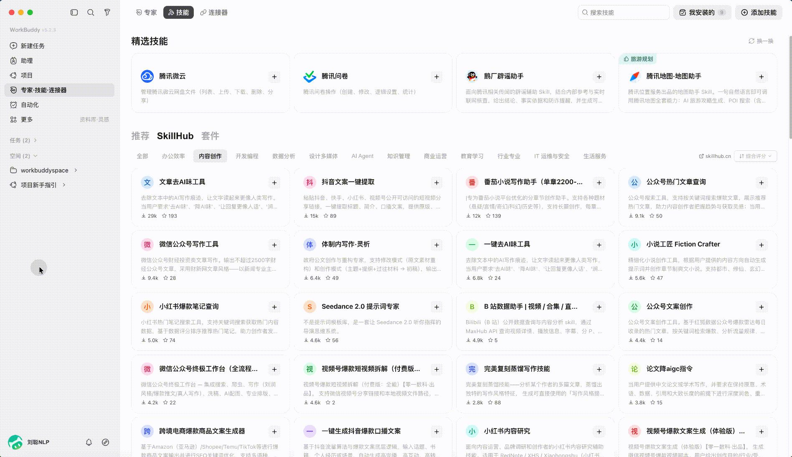
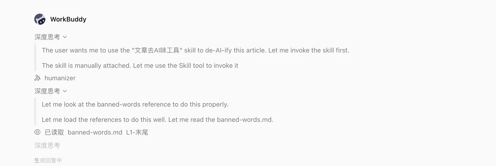
做完你手上会有：一版能直接发出去的通知正文，外加一份「删了哪些词」的清单。
第 1 步 · 复制素材（1 分钟）
下面是一份典型的「AI 味」通知——全是套话、关键信息一个没有。点右上角「复制」拿走。
校园读书节系列活动通知
各班级、全体同学：
为深入学习贯彻落实全民阅读相关精神，进一步切实提升我校学生文化素养，
营造浓厚的校园书香氛围，紧紧围绕立德树人根本任务，经研究决定，
开展我校2026年校园读书节系列活动，现将有关事项通知如下：
一、活动时间
另行通知
二、活动地点
另行通知
三、活动内容
本次活动形式多样、内容丰富、特色鲜明，主要包括：
（一）开展好书推荐活动；
（二）举办读书分享交流会；
（三）组织经典诵读活动。
四、活动对象
全体在校学生
五、相关要求
1. 各班级要高度重视，积极组织，认真落实，确保活动取得实效；
2. 广大同学要踊跃报名，广泛参与，共同感受阅读的魅力，在阅读中汲取力量；
3. 各班要精心组织、周密安排，努力营造爱读书、读好书、善读书的良好氛围。
让我们携手共进，在阅读中遇见更好的自己！
特此通知。
校团委
第 2 步 · 先自己改一遍（5 分钟，不许用 AI）
- 粘进记事本或 Word把素材贴进去，先别动。
- 照着清单圈空话词下面这些词，见到就圈出来：
进一步 切实 有效 积极 深入贯彻落实 相关精神 营造氛围 紧紧围绕
形式多样 内容丰富 特色鲜明 潜移默化 携手共进 共同感受 汲取力量
高度重视 认真落实 确保实效 精心组织 周密安排 踊跃报名 良好氛围 - 全删掉圈出来的词一个不留，包括「具有重要意义」这种整句。
- 把空位补上具体信息时间、地点、怎么参加、带什么——编的也行， 但要在后面标上「【模拟】」。
第 3 步 · 再用技能改一遍（5 分钟）
- 新建一个对话⚠️ 不要在刚才那个对话里做——新对话技能才会生效。
- 在输入框敲一个 /弹出技能列表后，选「文章去 AI 味」这一类技能 （你在动手做 ① 里已经装过一个，用那个也行）。
- 把下面这段指令粘进去指令在前，素材在后——如上，中间空一行。
- 发送，然后看它怎么改的注意它是先读技能里的规则，再照着规则逐条执行， 不是凭感觉润色。
用「文章去 AI 味」技能帮我改下面这篇通知。要求：
1. 删掉所有空话套话（例如"形式多样""内容丰富""汲取力量""携手共进""高度重视"这类一律删）；
2. 原文没写的时间、地点、联系方式，不要自己编，统一标成【待补】；
3. 活动怎么参加要能一眼看明白；
4. 改完之后，附一张清单，列出你删掉了哪些词句。
【下面是待改的稿子】
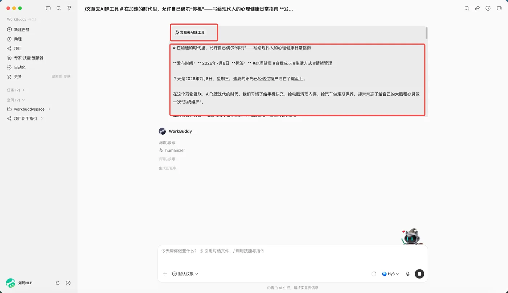
/文章去AI味工具 是技能引用，#… 是文件引用。
输入框里的提示文字也写着「@ 引用对话文件，/ 调用技能与指令」——
记住这两个符号就够了。下方「深度思考 / humanizer / 深度思考」是它的执行过程，
humanizer 就是「去 AI 味」这个技能的内部名。截图整理自 WorkBuddy 实战蓝皮书，仅作课堂讲解用；界面随版本更新，以你实际使用的版本为准。
第 4 步 · 两份并排比一比（4 分钟）
拿你手改的版本和技能改的版本放一起，逐条对：
- 空话词应该一个不剩拿第 2 步那份词清单再扫一遍技能改的版本。
还有漏网的：手工补删，并在指令里把那几个词点名写出来（「这类词一律删」），再发一次。 - 该留的信息必须还在「活动对象」「主办单位」这类内容如果也被删了，就是删过头。
被删过头：在指令里加一句「保留活动对象、主办单位等事实性信息」，再发一次。 - 不允许出现素材里没有的信息时间、地点、联系人——素材里本来就没写，它却给了具体答案，那就是它编的。
发现它编了：把那段删掉，补一句「没有的信息标【待补】，绝不许自己编」，再发一次。 ⚠️ 这一条最重要。 - 别人读一遍就能懂随便找个人读你改完的版本，能立刻答出「什么时候、在哪、怎么参加」。
对方还要追问：说明还缺关键信息，把缺的那几项列出来补进稿子。
改到什么程度算合格：
| 看哪里 | ✗ 不合格 | ✓ 合格 |
|---|---|---|
| 开头 | 为深入贯彻落实相关精神，营造良好氛围…… | 直接说事：读书节定在 4 月 12 日 |
| 地点 | 地点另行通知 | 地点：图书馆一楼大厅【待补】 |
| 怎么参加 | 请广大同学踊跃报名，广泛参与 | 现场签到即可，不用提前报名 |
| 结尾 | 让我们携手共进，在阅读中汲取力量！ | 联系人：图书馆值班老师【待补】 |
第 3 步那条「有没有编造」是重点。技能照着规则改文字没问题， 但时间、地点这些它不知道的事，它不该自己编——如果编了， 说明你指令里那句「不要自己编」没写，或者这个技能的规则还不够严。补上那句话再发一次。
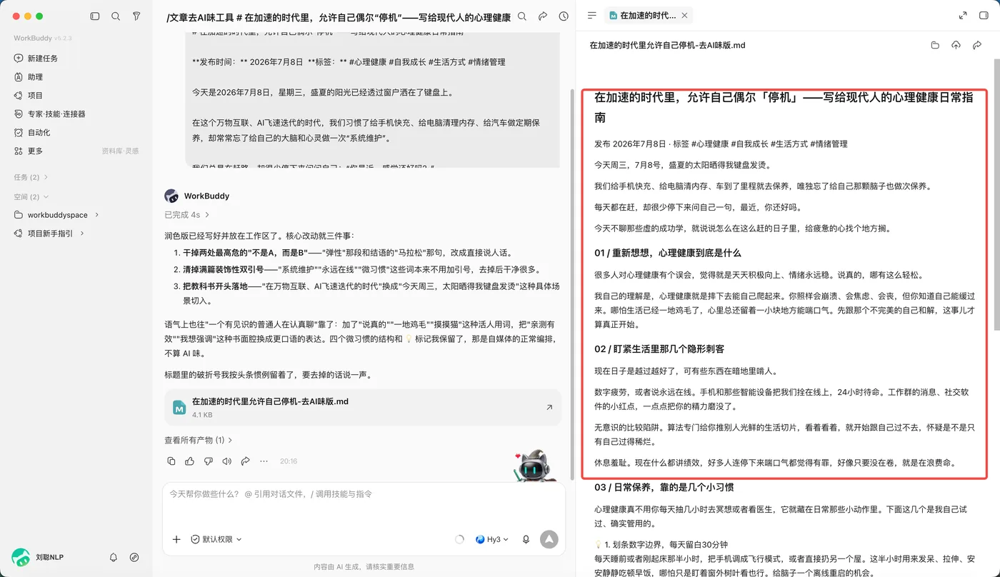
校园读书节活动通知
时间：本周五下午 2:00 — 4:30【模拟】
地点：图书馆一楼大厅【模拟】
对象：全校学生
现场三件事：
1. 好书推荐墙 —— 把你最喜欢的书写在墙上，推荐理由一句话就够
2. 读书分享会 —— 10 位同学现场分享，每人 5 分钟，想讲就现场报名
3. 旧书互换 —— 带一本完整的旧书来，和现场的同学交换
怎么参加：现场签到即可，不用提前报名。
联系人：图书馆值班老师【模拟】
（提醒：把【模拟】换成真实信息，这份通知才能发出去。）
description 是不是没写清楚。
五、关闭与卸载管理
技能装多了会互相干扰，也更容易被误调用。官方的建议是：只启用当前任务需要的技能。
好消息是不必为了「少点干扰」而卸载——关掉就行，随时能开回来。
| 操作 | 技能文件 | 会被自动调用吗 | 能恢复吗 |
|---|---|---|---|
| 关闭 | 保留 | 不会 | 开关一拨就回来 |
| 重新开启 | 保留 | 会 | — |
| 卸载 | 彻底删除 | 不会 | 要重新安装 |
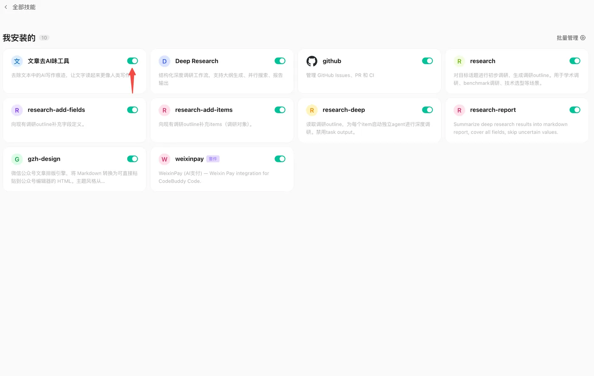
做完你手上会有：同一句指令在「关 / 开」两种状态下的两份回答—— 差别摆在那里，不用凭印象。
第 1 步 · 准备一句固定的测试指令（1 分钟）
复制下面这句备着。四次都用这一句——只有变量被控制住了，结果才有可比性。
用「文章去 AI 味」技能，把下面这句话改一遍，并列出你删掉了哪些词：
本次活动形式多样、内容丰富、特色鲜明，请广大同学踊跃报名、广泛参与。
第 2 步 · 关掉它，再试一次（1.5 分钟）
- 回技能页 →「已安装」，找到你在动手做 ① 里装的技能把开关拨到关闭。
- 新建一个对话⚠️ 必须新建，旧对话会沿用原来的状态。
- 贴第 1 步那句测试指令，发送看它这次怎么答。
✅ 你应该看到：它没有调用技能，只是按普通聊天给了一段话， 不会去查什么空话词清单。
第 3 步 · 回去确认它还在不在（1 分钟）
- 不用关掉对话，直接回技能页点左侧边栏「技能」→「已安装」，找到它。
✅ 你应该看到：它还好好地躺在列表里，只是开关变成了灰色。 这一步最容易被想错——很多人以为关了就是没了。
第 4 步 · 开回来，再试一次（1.5 分钟）
- 把开关拨回「开启」什么都不用重新装。
- 再新建一个对话，贴同一句测试指令，发送跟你第 2 步做的完全一样。
✅ 你应该看到：它又照着技能规则干活了——会先读规则， 再逐条删词，这通常比第 2 步的回答明显更「有章法」。
「关闭」只是停用一次马甲，「卸载」才是把人开除——卸载会删掉技能文件，要用得重新装。 所以平时嫌技能太多互相干扰，关掉就够了，不必卸载。
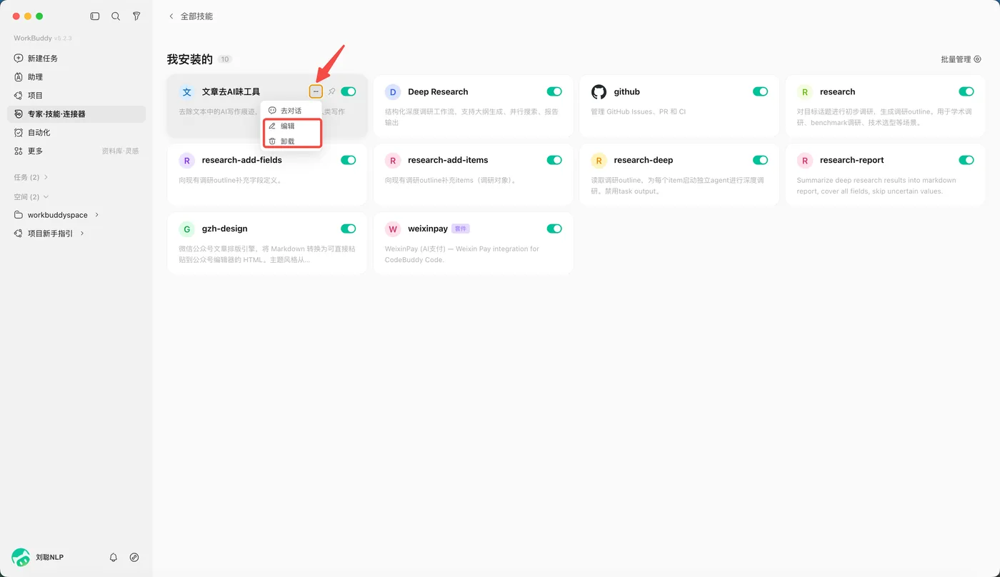
做完你手上会有：一个自己造的技能 + 它跑出来的一份成果， 外加一句「这技能哪里写得不够好」的判断。
第 1 步 · 先看一个例子：什么活值得做成技能（1 分钟）
这次就拿这件事来练手：把一周的作业要求汇总成一张待办表。
- 它值得做成技能，因为两个条件都占 每周都要做——周一翻上周遗留的、周三补新布置的、周日理一遍下周的； 步骤基本固定——找齐各科作业 → 排截止时间 → 标完成状态。
- 反过来看，什么不值得做「帮我写一篇实训报告」这种一次性的活， 直接下指令就行——做成技能也很少再打开。
第 2 步 · 复制这条指令，整段发给它（1 分钟）
入口在技能页右上角「添加技能」→「创建技能」， 把下面整段贴进去。技能名称按你自己的习惯改， 其余保持原样——尤其最后那句「什么时候用」，它决定 AI 以后认不认得出该不该召唤这个技能。
帮我创建一个技能，要求如下。
【这个技能用来做什么】
把一周里各门课提到的作业要求，汇总成一张待办表。
【我希望它输出什么】
一张按截止时间排序的表格，列出：科目 / 作业内容 / 截止时间 / 完成状态（未完成）。
【必须遵守的规则】
1. 只读不写，不许改动我的原始文件；
2. 没说截止时间的写"待确认"，不许自己定一个；
3. 同一件事被提到多次，合并成一条，不要重复列出。
【它什么时候该被使用】
当我说"汇总作业""这周的作业有哪些"这类话的时候。
请帮我写好这个技能的说明文件，特别是「它是做什么的、什么时候用」那一栏，
写清楚不能只写"汇总作业"三个字。
帮我创建一个技能，要求如下。
【这个技能用来做什么】
把每周的课程笔记，按科目整理成一份清单。
【我希望它输出什么】
一张表格，列出：科目 / 日期 / 讲了什么 / 作业与截止时间。
【必须遵守的规则】
1. 只读不写，不许修改或删除我的原笔记文件；
2. 笔记里没写的内容就留空，绝对不许自己补或编；
3. 看不懂的科目名原样保留，不要猜。
【它什么时候该被使用】
当我说"整理笔记""笔记整理成表格"这类话的时候。
请帮我写好这个技能的说明文件，特别是「它是做什么的、什么时候用」那一栏
要把触发场景写清楚，不能只写三个字"整理笔记"。
帮我创建一个技能，要求如下。
【这个技能用来做什么】
把［社团活动］的照片文件，按"拍摄日期-活动名-序号"的格式重命名。
【我希望它输出什么】
一份重命名前后对照表，列出原文件名和新文件名。
【必须遵守的规则】
1. 先列出打算怎么改，我确认之后才动手；
2. 遇到同名冲突，在文件名末尾加序号，绝对不许直接覆盖；
3. 只读 EXIF 里的拍摄日期，读不到就标【无日期】，不要拿今天日期充数。
【它什么时候该被使用】
当我说"照片重命名""整理活动照片"这类话的时候。
请帮我写好这个技能的说明文件，把「它是做什么的、什么时候用」写清楚。
第 3 步 · 让它造（4 分钟）
- 点「添加技能」→「创建技能」在技能页右上角。
- 把复制好的指令整段粘进去，回车它会先跟你确认几个细节，如实回答就行。
- 造完之后，点开它，把「它是做什么的、什么时候用」读一遍这就是它的
description， 后面第 5 步要用。
第 4 步 · 用它真跑一次（3 分钟）
- 新建一个对话同上，新对话技能才生效。
- 先把下面这段作业记录贴进去这就是你这一周零散的作业信息——有定了截止时间的，也有没定的。
- 再贴一行「汇总一下」，一起发送看它有没有按你定的规矩来。
9月22号 周一
机器学习 讲决策树，作业是第四章第1题，下周一交
9月23号 周二
Python 课讲列表推导式，没留作业
9月24号 周三
职业生涯规划课，要交一份简历，老师说月底前交，具体日期没定
第 5 步 · 给它挑一个毛病（2 分钟）
照这三条去找，命中率最高——找到任意一条就算过关：
- 「它是做什么的」那一栏太空泛是不是只有「汇总作业」四个字？只写这个，
以后 AI 认不出什么时候该叫它——必须把触发词写进去。
怎么改：让它重写成「把一周各科作业汇总成待办表，当我说『汇总作业』时使用」。 - 规则里没写「不许做什么」有没有「不许修改原文件」「不许编造」这类红线？没有就是缺陷。
怎么改：补一条「只读不写，不许改动或删除我的原始文件」。 - 没写出错时怎么办比如素材里没有日期时该怎么办——没写，它就会自己编一个。
怎么改：补一条「读不到日期就标【无日期】，不要拿今天的日期充数」。
合格的说法长这样（把这三句话读完，你就知道该怎么说了）：
它把 description 写成了"整理笔记"，太笼统。
应该写成："把课程笔记按科目整理成表格，当我说『整理笔记』时使用"——
把触发词写进去，AI 才认得出我什么时候需要它。
另外规则里没写"不许修改原文件"，这条是红线，必须补上。
这个任务不看你的技能做得多漂亮，只看你能不能指出它一个毛病，并说出该怎么改。 能挑出毛病，说明你真读懂了技能在干什么——这比造出十个技能都值钱。
随堂自测不计分 · 课后自检
先自己想，再点开答案。这套题是给你自己查漏用的，和要提交的作业不重复。
- A. 它的回答更长更详细
- B. 它能把一套做法固化成文件，反复复用
- C. 它只能在联网时使用
- D. 它可以绕过权限访问你的电脑
- A. 把 100 个技能的完整说明全部读一遍
- B. 只读每个技能的名称和描述，判断相关了才读完整说明
- C. 随机挑几个读
- D. 一个都不读，等你点名
- A. 技能文件夹的名字里
- B. SKILL.md 的 description 里
- C. scripts 目录下的脚本里
- D. 写在 skills 目录的上级目录名里
description 是唯一「永远在场」的信息，
AI 判断要不要用这个技能，能看到的就这一行。把你平时会说的词写进去，它才认得出你。
- A. 正确，装得多一定更慢
- B. 错误，未触发的技能只占用很小一段描述，开销可忽略
本课要点回顾
这一课要带走五件事
- Skill = 一组可复用的说明和资源，其中只有
SKILL.md是必需的； description决定它什么时候被用上——写得具体，才认得出你的需求；- 拿到技能的四种方式：市场安装 / 查找 / 上传 / 创建；
- 调用三步：装好 → / 唤起或直接说 → 把材料交给它；
- 关闭 ≠ 卸载：关掉不删文件、随时开回来。
下一步棋：今天你让 AI 会了一门手艺。 但真实工作里，一件复杂的事往往要几种人配合——下一课 专家与专家团 讲的就是这件事。
课后作业单选 / 多选 / 判断
下面这套题发在学习通上。点一下展开，再点框内右上角「复制」就能整段拿走。
1.（单选）一个 Skill 文件夹里，哪个文件是必需的？
A. scripts 目录
B. SKILL.md
C. references 目录
D. assets 目录
【答案】B
【解析】只有 SKILL.md 是必需的，另外三个目录都可选。它写明用途、输入、输出和步骤，其中 description 决定了 AI 什么时候会想起用这个技能。
2.（多选）下面哪些方式可以在 WorkBuddy 里拿到技能？
A. 在技能市场里搜索后安装
B. 用「查找技能」描述需求，让它自己去找
C. 上传别人分享的技能包
D. 用「创建技能」让它从零生成一个
【答案】ABCD
【解析】四个都对。这正是技能页「添加技能」里的三个入口，加上直接在市场里搜。四种方式的区别只在于技能是不是现成的：A、B 用现成的，C 用别人给的，D 是让 AI 现做一个。
3.（单选）技能装好了，在原对话里说需求却没有触发。最应该先试哪一步？
A. 立刻卸载重装
B. 换一个技能
C. 新开一个对话再说一次
D. 重启电脑
【答案】C
【解析】「装完技能需要在新对话中生效」是最常见的排查第一步，成本最低。A 和 B 都是跳过排查直接下结论，D 与本题原因无关。正确顺序是：先换新对话 → 再在需求里点名技能 → 最后才看 description 写得清不清楚。
4.（单选）在输入框里打出下面哪个符号，可以唤起技能列表、手动选中要用的技能？
A. #
B. /
C. @
D. +
【答案】B
【解析】打一个斜杠 / 就会弹出技能列表，选中即用，这是最不容易认错技能的方式。@ 是用来引用文件的，别混了。
5.（判断）把技能关掉，等于把它卸载了。
A. 正确
B. 错误
【答案】B（错误）
【解析】关闭只是停止自动调用，技能仍在「已安装」列表里，开关一拨就恢复；卸载才会彻底删除技能文件。所以平时想「少点干扰」，关掉就行，不必卸载。
6.（多选）关于技能的管理，下面说法正确的是？
A. 关闭后技能仍保留在「已安装」列表里
B. 关闭会删除技能的源文件
C. 卸载后需要重新安装才能恢复
D. 关闭只是不再自动调用，随时可以重新开启
【答案】ACD
【解析】B 说反了。关闭不会动技能文件，它只是把你个人的开关状态记进配置，连 SKILL.md 都不会改。正因为关掉不删文件、随时能开回来，才建议用「关闭」代替「卸载」。
共 6 题，加上上面的随堂自测 4 题，本课合计 10 题。 随堂自测供你课后自查，这 6 题是提交用的，两套题不重复。